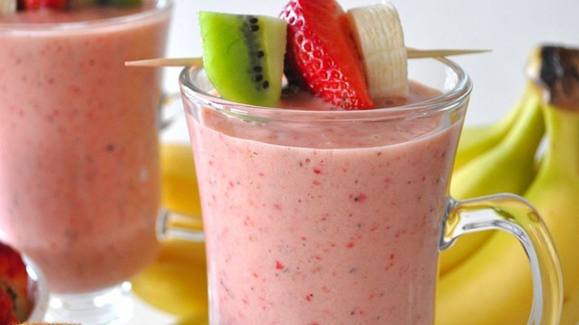

13 min

32 servings
Ingredients
- 2 cream cheese packages, softened
- 1 cup mayonnaise
- 1 can chopped green chillies, drained
- 2 ounces canned diced jalapeno peppers, drained
- 1 cup grated Parmesan cheese
Directions
- Stir together cream cheese and mayonnaise in a large bowl until smooth.
- Stir in green chiles and jalapeno peppers.
- Pour mixture into a microwave safe serving dish, and sprinkle with Parmesan cheese.
- Microwave on High until hot, about 3 minutes.
40 min
4 servings
Ingredients
- 1/2 cup white sugar
- 3 tablespoons unsweetened cocoa powder
- 1/4 cup cornstarc
- 1/8 teaspoon salt
- 2 3/4 cups milk
- 2 tablespoons butter, room temperature
- 1 teaspoon vanilla extract
Directions
- In a saucepan, stir together sugar, cocoa, cornstarch and salt.
- Place over medium heat, and stir in milk.
- Bring to a boil, and cook, stirring constantly, until mixture thickens enough to coat the back of a metal spoon.
- Remove from heat, and stir in butter and vanilla.
- Let cool briefly, and serve warm, or chill in refrigerator until serving.

5 min
2 servings
Ingredients
- 1 banana
- 6 strawberries
- 1/2 cup vanilla frozen yogurt
- 3/4 cup pineapple and orange juice blend
Directions
- Place the banana, strawberries, kiwi, vanilla frozen yogurt, and pineapple and orange juice blend in a blender.
- Blend until smooth.